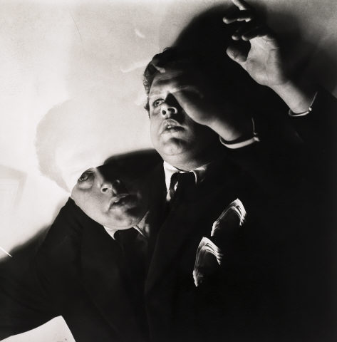
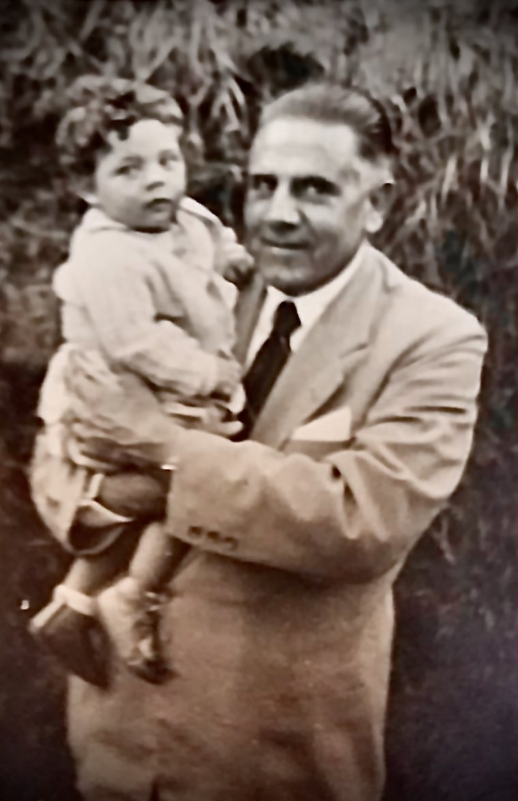

Fotografias
Retratos, teatro, amigos e família.
Retratos



Teatro e amigos


Família


Desenhos

A galeria vai crescendo à medida que o espólio familiar é digitalizado e as pessoas, datas e autores são identificados. As fotografias de terceiros são reproduzidas com indicação de autor; se detiver direitos sobre alguma e preferir que seja retirada, ou souber identificar quem nelas aparece, escreva-nos através de Contactos. Ver também Direitos.